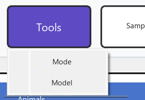
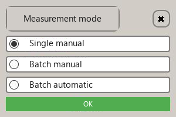
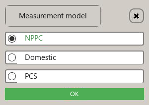
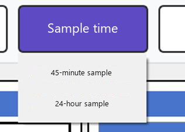

Parameters
After login the main window opens. Three settings are required before a sample is measured: measurement mode, measurement model and measurement time.

Fig. 7. Main window. Menus: File, Tools, Measurement time, Meat-colour calibration, Help.
The status bar under the four panes reports the species, how many animals and images were imported, the mode, the model, how many animals have been measured, the time setting, and the data path. Defaults on a new session are: species pig, mode single manual measurement, model NPPC, time 45-minute sample, path D:\Meat_Quality_Output.
Measurement mode
|
  Use Menu Tools > Measurement mode. The default is Single manual measurement. |
- Single manual measurement. Click one image, then click the single-measurement button. The numbers appear in that image's column.
- Multiple manual measurement. Select several images, then click the batch-manual button.
- Multiple automatic measurement. After the folders are imported, tick the folders you want, or click Select all, then click the automatic batch button. A progress window runs until every selected folder is finished.
Measurement model
|
 Use Menu Tools > Measurement model. The default is the NPPC model. A different model produces different scores. The information table labels meat colour and marbling as NPPC 6-point scores when that model is in use. |
Measurement time
|
 Use Menu Measurement time. The default is 45-minute sample. Choose 24-hour sample when you need the marbling score and the intramuscular fat content. Those two results are not produced on the 45-minute setting. |
Changing the mode, the model or the time after a folder has been measured clears the numbers for that folder. Measure it again.
Continue with Taking images if the template and folders are not loaded yet.